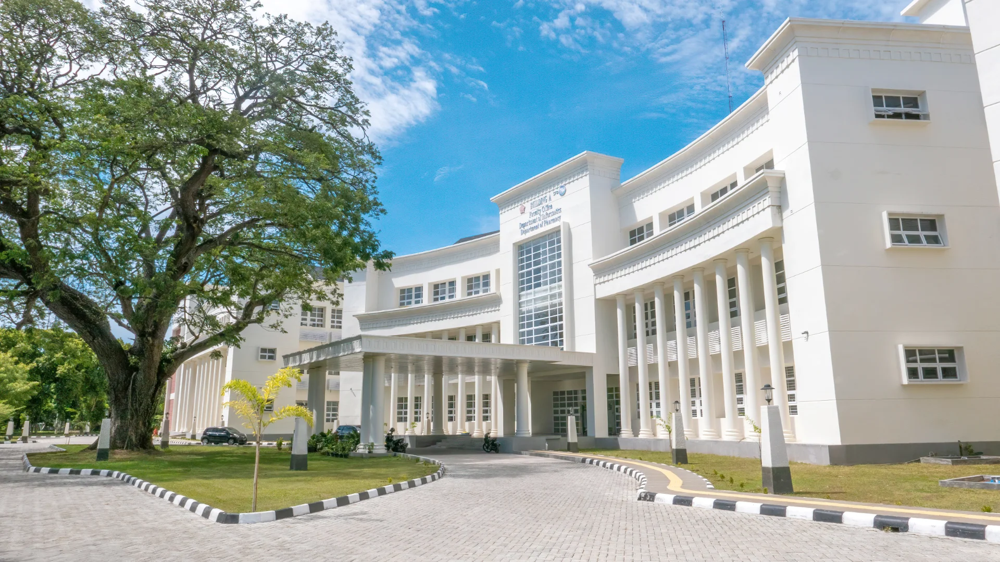
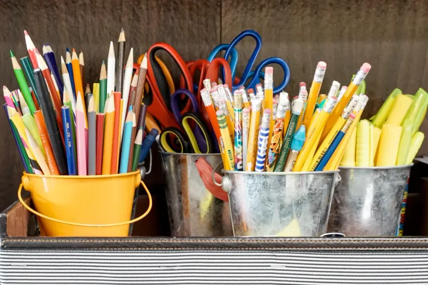
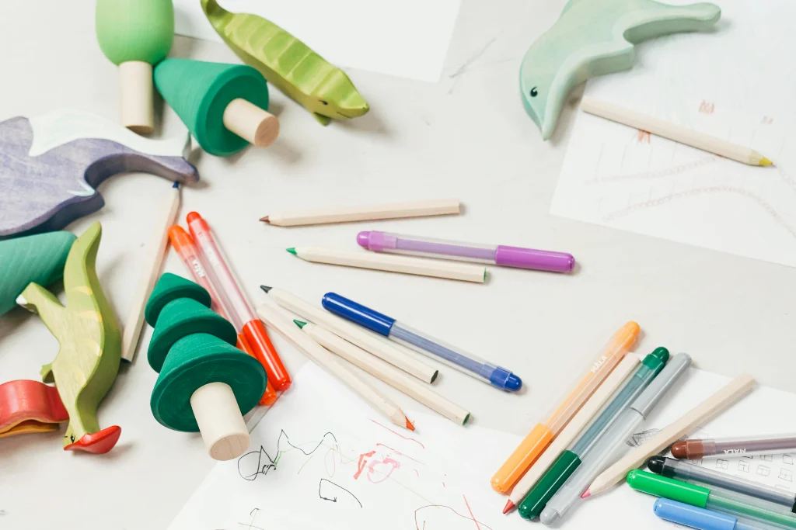
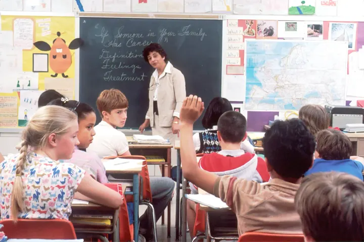
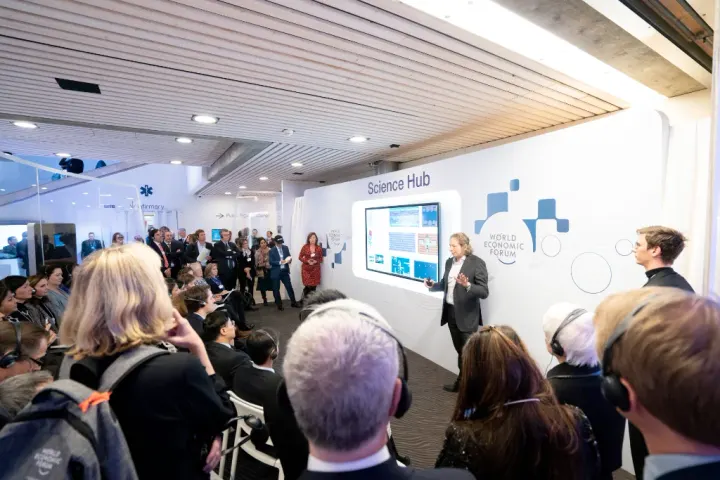

Warta Multi-Kampus
Kabar riset terobosan, inovasi teknologi, prestasi mahasiswa, dan dinamika terkini dari berbagai kampus ternama.
Baca BeritaJelajahi warta riset terkini, agenda kompetisi & event nasional, info beasiswa, hingga direktori universitas terkemuka se-Indonesia dalam satu tempat terpadu.

Kabar riset terobosan, inovasi teknologi, prestasi mahasiswa, dan dinamika terkini dari berbagai kampus ternama.
Baca BeritaTemukan agenda hackathon, kompetisi bisnis, seminar nasional, festival seni, dan turnamen olahraga se-Indonesia.
Cek Kalender EventProfil komprehensif universitas negeri & swasta unggulan, akreditasi, program studi, serta fasilitas terbaiknya.
Jelajahi KampusSimposium akbar kolaborasi mahasiswa antar-kampus se-Indonesia! Pameran 100+ karya teknologi terapan, seminar kewirausahaan, dan networking lintas almamater.

Portal Kampus (UniPulse) hadir sebagai jembatan informasi netral yang merangkum dinamika seluruh perguruan tinggi. Kami mengumpulkan kabar terpercaya, peluang kompetisi, dan info beasiswa agar setiap mahasiswa serta calon mahasiswa dapat berkembang tanpa sekat almamater.
Menjadi agregator informasi edukasi paling terpercaya yang mempercepat diseminasi riset, event, dan kolaborasi antar-kampus di Indonesia.
Mewujudkan ekosistem media kampus terpadu yang inklusif, inspiratif, dan melahirkan sinergi generasi muda terbaik bangsa.
Informasi diverifikasi langsung dari rilis resmi universitas dan organisasi kemahasiswaan terpercaya.
Menghubungkan ribuan mahasiswa, dosen, dan peneliti dari berbagai penjuru nusantara.
Membuka ruang publikasi event dan prestasi secara gratis bagi BEM, UKM, dan komunitas kampus.
Menghadirkan info beasiswa, magang bersertifikat, dan peluang kompetisi nasional terupdate.
Proses perkuliahan didukung standar kurikulum teruji dan bimbingan intensif.
Aktif membantu masyarakat lewat program pengabdian dan proyek mahasiswa.
Ruang bebas untuk eksperimen, lomba karya ilmiah, dan pengembangan startup.
Kesempatan magang di perusahaan multinasional dan pertukaran mahasiswa luar negeri.
Temukan informasi lengkap universitas-universitas terkemuka di Indonesia untuk melanjutkan studimu

Kampus terdepan dengan reputasi internasional, memiliki 14 fakultas, fasilitas riset mutakhir kelas dunia, dan jaringan alumni yang tersebar kuat di berbagai industri strategis global.

Pionir pendidikan tinggi teknik dan rekayasa di Indonesia dengan keunggulan riset sains, teknologi, dan seni.
Profil Kampus
Pusat keilmuan dan kebudayaan terkemuka dengan fokus pengabdian masyarakat, sains sosio-humaniora, dan pangan.
Profil Kampus
Pusat riset maritim, kecerdasan buatan, otomotif ramah lingkungan, dan inovasi rekayasa terapan nusantara.
Profil Kampus
Pusat unggulan bidang kedokteran, farmasi, sains terapan, serta ilmu sosial, hukum, dan ekonomi berdaya saing global.
Profil KampusKuliah seru, pertemanan hangat, dan puluhan kegiatan positif siap menyambutmu

Di luar jam kelas, Portal Kampus selalu ramai dengan kegiatan seru. Mulai dari workshop teknologi, festival seni tahunan, hingga latihan olahraga bareng di sport center.
Asah skill pemrograman dan bikin proyek aplikasi bareng komunitas developer kampus.
Cek Selengkapnya
Terjun langsung bantu riset dosen dan publikasikan karya ilmiah ke jurnal bereputasi.
Cek Selengkapnya
Bantu mengajar adik-adik sekitar dan ikut program tanggap lingkungan setiap semester.
Cek Selengkapnya
Ruang latihan kedap suara lengkap dengan instrumen dan perlengkapan rekaman audio-visual.
Cek SelengkapnyaPengalaman nyata dari dosen, mahasiswa, dan alumni yang merasakan atmosfer belajar di Portal Kampus

"Yang paling saya suka mengajar di Portal Kampus adalah rasa ingin tahu mahasiswanya. Di kelas, diskusinya selalu dua arah dan penuh ide-ide segar."

"Dukungan fasilitas lab dan kemudahan akses jurnal ilmiah di sini sangat membantu riset tesis saya. Dosen pembimbing juga sangat terbuka diajak diskusi."

"Kultur kolaboratif di Portal Kampus melatih saya terbiasa memimpin tim kerja lintas disiplin sejak kuliah, yang ternyata sangat krusial saat bekerja di industri."

"Lingkungan kampusnya suportif banget. Di sini saya bukan cuma belajar teori, tapi juga dapat kesempatan magang langsung di perusahaan mitra kampus."

"Jejaring alumni Portal Kampus sangat aktif dan hangat. Kami rutin bikin sesi mentoring karier dan berbagi peluang kerja untuk adik-adik mahasiswa."
Melalui kurikulum yang adaptif, pengajar berdedikasi, dan kerja sama erat dengan dunia industri, kami memastikan setiap mahasiswa memperoleh keterampilan praktis dan wawasan mendalam untuk berkarier gemilang.
Kami percaya setiap mahasiswa punya potensi unik yang menunggu diasah. Di sini, kamu didampingi dosen yang peduli dan difasilitasi ekosistem belajar yang memerdekakan cara berpikirmu.
Fokus pada pemecahan masalah nyata, proyek tim, dan studi kasus lapangan.
Konsultasi riset dan mentoring karier berjalan akrab tanpa jarak birokrasi kaku.
Keseimbangan antara prestasi akademik, kesehatan mental, dan soft skill kepemimpinan.
 [UGM] Inovasi Riset
[UGM] Inovasi Riset
Proyek kolaborasi lintas jurusan ini berhasil mengefisiensikan pemakaian air dan pupuk hingga 32% lewat sensor cerdas otomatis.


Catat tanggalnya dan jangan sampai ketinggalan event, lomba, dan seminar antar-kampus se-Indonesia!

Simak demo puluhan prototipe karya mahasiswa dari 30+ universitas, pameran riset AI, dan bincang santai bareng founder startup ternama.


